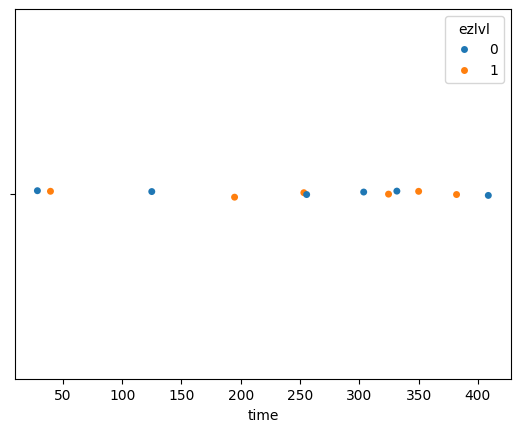
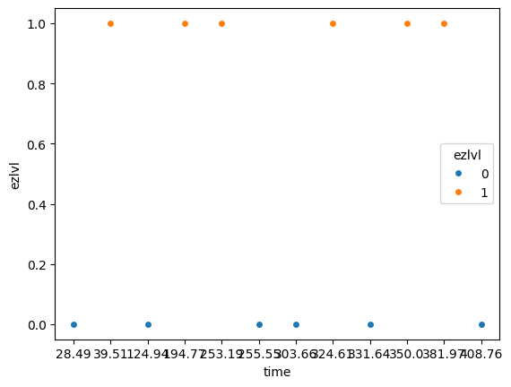
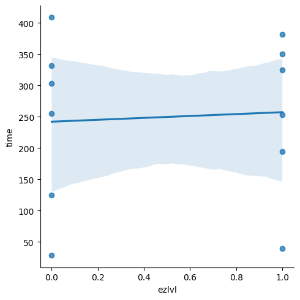
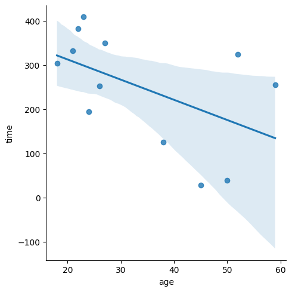
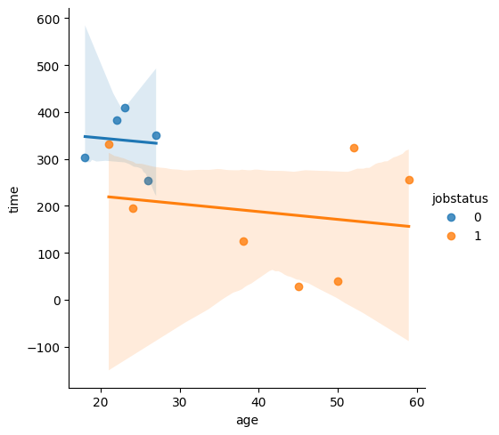

Section 1.2 — Data in practice#
This notebook contains all the code from Section 1.2 Data in practice of the No Bullshit Guide to Statistics.
2 + 3
5
Notebook setup#
Note for Windows users#
If you’re on macOS or Linux you can ignore this section—skip to the next section Data management with Pandas.
File paths on Windows use the backslash character (\) as path separator,
while UNIX operating systems like Linux and macOS use forward slash separator / as path separator.
If you you’re on Windows you’ll need to manually edit the code examples below to make them work by replacing all occurrences of “/” with “\\”. The double backslash is required to get a literal backslash because the character \ has special meaning as an escape character.
import os
if os.path.sep == "/":
print("You're on a UNIX system (Linux or macOS).")
print("Enjoy civilization!")
elif os.path.sep == "\\":
print("You're on Windows so you should use \\ as path separator.")
print("Replace any occurence of / (forward slash) in paths with \\\\ (double-backslash).")
You're on a UNIX system (Linux or macOS).
Enjoy civilization!
The current working directory is a path on your computer where this notebook is running. The code cell below shows you can get you current working directory.
os.getcwd()
'/home/runner/work/noBSstats/noBSstats/notebooks'
You’re in the notebooks/ directory, which is inside the parent directory noBSstats/.
The datasets we’ll be using in this notebook are located in the datasets/ directory, which is sibling of the notebooks/ directory, inside the parent noBSstats/. To access data file minimal.csv in the datasets/ directory from the current directory, we must specify a path that includes the .. directive (go to parent), then go into the datasets directory, then open the file minimal.csv.
This combination of “directions” for getting to the file will look different if you’re on a Windows system or on a UNIX system. The code below shows the correct path you should access.
if os.path.sep == "/":
# UNIX path separators
path = "../datasets/players.csv"
else:
# Windows path separators
path = "..\\datasets\\players.csv"
print("The path to the file players.csv in the datasets/ directory is")
path
The path to the file players.csv in the datasets/ directory is
'../datasets/players.csv'
All the code examples provided below assume you’re on a UNIX system, hence the need to manually modify them to use double-backslashes in path strings for the code to work.
Getting started with JupyterLab#
Download and install JupyterLab Desktop#
Follow instructions in the Python tutorial to install JupyterLab Desktop on your computer.
Download the noBSstats notebooks and datasets#
Install requirements#
# %pip install -r ../requirements.txt
Datasets for the book#
! ls -1 ../datasets/*csv
../datasets/apples.csv
../datasets/doctors.csv
../datasets/eprices.csv
../datasets/epriceswide.csv
../datasets/kombucha.csv
../datasets/kombuchapop.csv
../datasets/minimal.csv
../datasets/players.csv
../datasets/players_full.csv
../datasets/students.csv
../datasets/visitors.csv
Interactive notebooks for each section#
!ls ../notebooks/*ipynb
../notebooks/11_intro_to_data.ipynb
../notebooks/12_data_in_practice.ipynb
../notebooks/13_descriptive_statistics.ipynb
../notebooks/21_discrete_random_vars.ipynb
../notebooks/22_multiple_random_vars.ipynb
../notebooks/23_inventory_discrete_dists.ipynb
../notebooks/24_calculus_prerequisites.ipynb
../notebooks/25_continuous_random_vars.ipynb
../notebooks/26_inventory_continuous_dists.ipynb
../notebooks/27_random_var_generation.ipynb
../notebooks/28_random_samples.ipynb
../notebooks/31_estimators.ipynb
../notebooks/32_confidence_intervals.ipynb
../notebooks/33_intro_to_NHST.ipynb
../notebooks/34_analytical_approx.ipynb
../notebooks/35_two_sample_tests.ipynb
../notebooks/36_design.ipynb
../notebooks/37_inventory_stats_tests.ipynb
../notebooks/41_introduction_to_LMs.ipynb
../notebooks/99_mean_estimation_details.ipynb
../notebooks/99_proportions_estimators.ipynb
../notebooks/OLD34_analytical_approximation.ipynb
../notebooks/cut_material.ipynb
../notebooks/one_sample_known_mean_unknown_var.ipynb
Exercises notebooks#
!ls ../exercises/*ipynb
../exercises/exercises_12_practical_data.ipynb
../exercises/exercises_13_descr_stats.ipynb
../exercises/exercises_21_discrete_RVs.ipynb
../exercises/exercises_31_estimtors.ipynb
../exercises/exercises_32_confidence_intervals.ipynb
../exercises/exercises_33_intro_to_NHST.ipynb
../exercises/exercises_35_two_sample_tests.ipynb
../exercises/problems_1_data.ipynb
Players dataset#
import pandas as pd
players = pd.read_csv("../datasets/players.csv")
players.head()
| username | country | age | ezlvl | time | points | finished | |
|---|---|---|---|---|---|---|---|
| 0 | mary | us | 38 | 0 | 124.94 | 418 | 0 |
| 1 | jane | ca | 21 | 0 | 331.64 | 1149 | 1 |
| 2 | emil | fr | 52 | 1 | 324.61 | 1321 | 1 |
| 3 | ivan | ca | 50 | 1 | 39.51 | 226 | 0 |
| 4 | hasan | tr | 26 | 1 | 253.19 | 815 | 0 |
Data management with Pandas#
The first step is to import the Pandas library.
We’ll follow the standard convention of importing the pandas module under the alias pd.
import pandas as pd
If you get an error when running this code cell,
make sure you go back to the above step and run %pip install -r ../requirements.txt.
Alternatively,
you can run %pip install pandas to install just the Pandas library.
Data frames#
Loading the dataset minimal.csv
# !cat "../datasets/players.csv"
players = pd.read_csv("../datasets/players.csv")
players
| username | country | age | ezlvl | time | points | finished | |
|---|---|---|---|---|---|---|---|
| 0 | mary | us | 38 | 0 | 124.94 | 418 | 0 |
| 1 | jane | ca | 21 | 0 | 331.64 | 1149 | 1 |
| 2 | emil | fr | 52 | 1 | 324.61 | 1321 | 1 |
| 3 | ivan | ca | 50 | 1 | 39.51 | 226 | 0 |
| 4 | hasan | tr | 26 | 1 | 253.19 | 815 | 0 |
| 5 | jordan | us | 45 | 0 | 28.49 | 206 | 0 |
| 6 | sanjay | ca | 27 | 1 | 350.00 | 1401 | 1 |
| 7 | lena | uk | 23 | 0 | 408.76 | 1745 | 1 |
| 8 | shuo | cn | 24 | 1 | 194.77 | 1043 | 0 |
| 9 | r0byn | us | 59 | 0 | 255.55 | 1102 | 0 |
| 10 | anna | pl | 18 | 0 | 303.66 | 1209 | 1 |
| 11 | joro | bg | 22 | 1 | 381.97 | 1491 | 1 |
# ALT.
filepath = os.path.join("..", "datasets", "players.csv")
players = pd.read_csv(filepath)
Data frame properties#
type(players)
pandas.core.frame.DataFrame
players.index
RangeIndex(start=0, stop=12, step=1)
players.columns
Index(['username', 'country', 'age', 'ezlvl', 'time', 'points', 'finished'], dtype='object')
players.shape
(12, 7)
players.dtypes
username object
country object
age int64
ezlvl int64
time float64
points int64
finished int64
dtype: object
players.head(3)
# players.tail(2)
# players.sample(3)
| username | country | age | ezlvl | time | points | finished | |
|---|---|---|---|---|---|---|---|
| 0 | mary | us | 38 | 0 | 124.94 | 418 | 0 |
| 1 | jane | ca | 21 | 0 | 331.64 | 1149 | 1 |
| 2 | emil | fr | 52 | 1 | 324.61 | 1321 | 1 |
players.info(memory_usage="deep")
<class 'pandas.core.frame.DataFrame'>
RangeIndex: 12 entries, 0 to 11
Data columns (total 7 columns):
# Column Non-Null Count Dtype
--- ------ -------------- -----
0 username 12 non-null object
1 country 12 non-null object
2 age 12 non-null int64
3 ezlvl 12 non-null int64
4 time 12 non-null float64
5 points 12 non-null int64
6 finished 12 non-null int64
dtypes: float64(1), int64(4), object(2)
memory usage: 2.0 KB
# players.axes
# players.memory_usage()
# players.values
Accessing values in a DataFrame#
Selecting individual values#
# Emil's points
players.loc[2,"points"]
1321
Selecting entire rows#
# Sanjay's data
row6 = players.loc[6,:] # == players.loc[6]
row6
username sanjay
country ca
age 27
ezlvl 1
time 350.0
points 1401
finished 1
Name: 6, dtype: object
# Rows of the dataframe are Series objects
type(row6)
pandas.core.series.Series
The index of the series row6 is the same as the columns index of the data frame players.
row6.index
Index(['username', 'country', 'age', 'ezlvl', 'time', 'points', 'finished'], dtype='object')
To access individual values, use the square bracket notation.
row6["age"]
27
Selecting entire columns#
ages = players["age"]
ages
0 38
1 21
2 52
3 50
4 26
5 45
6 27
7 23
8 24
9 59
10 18
11 22
Name: age, dtype: int64
type(ages)
pandas.core.series.Series
ages.index
RangeIndex(start=0, stop=12, step=1)
ages.values
array([38, 21, 52, 50, 26, 45, 27, 23, 24, 59, 18, 22])
# ALT1.
# players["age"].equals( players.loc[:,"age"] )
# ALT2.
# players["age"].equals( players.age )
ages[6]
27
Selecting multiple columns#
players[["username", "country"]]
| username | country | |
|---|---|---|
| 0 | mary | us |
| 1 | jane | ca |
| 2 | emil | fr |
| 3 | ivan | ca |
| 4 | hasan | tr |
| 5 | jordan | us |
| 6 | sanjay | ca |
| 7 | lena | uk |
| 8 | shuo | cn |
| 9 | r0byn | us |
| 10 | anna | pl |
| 11 | joro | bg |
Selecting subsets of the data frame#
We rarely need to do this,
but for the purpose of illustration of the loc syntax,
here is the code for selecting the time and points columns
from the last three rows of the players data frame.
players.loc[9:12, ["time","points"]]
| time | points | |
|---|---|---|
| 9 | 255.55 | 1102 |
| 10 | 303.66 | 1209 |
| 11 | 381.97 | 1491 |
Statistical calculations using Pandas#
ages = players["age"] # == players.loc[:,"age"]
ages
0 38
1 21
2 52
3 50
4 26
5 45
6 27
7 23
8 24
9 59
10 18
11 22
Name: age, dtype: int64
type(ages)
pandas.core.series.Series
ages.index
RangeIndex(start=0, stop=12, step=1)
ages.name
'age'
players.loc[6]
username sanjay
country ca
age 27
ezlvl 1
time 350.0
points 1401
finished 1
Name: 6, dtype: object
Series methods#
ages.count()
12
# # ALT
# len(ages)
ages.sum()
405
ages.sum() / ages.count()
33.75
ages.mean()
33.75
ages.std()
14.28365244861157
Selecting only certain rows (filtering)#
To select only rows where ezlvl is 1, we first build the boolean selection mask…
mask = players["ezlvl"] == 1
mask
0 False
1 False
2 True
3 True
4 True
5 False
6 True
7 False
8 True
9 False
10 False
11 True
Name: ezlvl, dtype: bool
… then select the rows using the mask.
print(players[mask])
username country age ezlvl time points finished
2 emil fr 52 1 324.61 1321 1
3 ivan ca 50 1 39.51 226 0
4 hasan tr 26 1 253.19 815 0
6 sanjay ca 27 1 350.00 1401 1
8 shuo cn 24 1 194.77 1043 0
11 joro bg 22 1 381.97 1491 1
The above two step process can be combined into a more compact expression:
players[players["ezlvl"]==1]
| username | country | age | ezlvl | time | points | finished | |
|---|---|---|---|---|---|---|---|
| 2 | emil | fr | 52 | 1 | 324.61 | 1321 | 1 |
| 3 | ivan | ca | 50 | 1 | 39.51 | 226 | 0 |
| 4 | hasan | tr | 26 | 1 | 253.19 | 815 | 0 |
| 6 | sanjay | ca | 27 | 1 | 350.00 | 1401 | 1 |
| 8 | shuo | cn | 24 | 1 | 194.77 | 1043 | 0 |
| 11 | joro | bg | 22 | 1 | 381.97 | 1491 | 1 |
# BONUS. mask for selecting players with ezlvl=1 and time greater than 200 mins
# players[(players["ezlvl"] == 1) & (players["time"] >= 200)]
# BONUS. mask for selecting USA and Canada players
# players["country"].isin(["us","ca"])
Sorting data frames and ranking#
players.sort_values("time")
| username | country | age | ezlvl | time | points | finished | |
|---|---|---|---|---|---|---|---|
| 5 | jordan | us | 45 | 0 | 28.49 | 206 | 0 |
| 3 | ivan | ca | 50 | 1 | 39.51 | 226 | 0 |
| 0 | mary | us | 38 | 0 | 124.94 | 418 | 0 |
| 8 | shuo | cn | 24 | 1 | 194.77 | 1043 | 0 |
| 4 | hasan | tr | 26 | 1 | 253.19 | 815 | 0 |
| 9 | r0byn | us | 59 | 0 | 255.55 | 1102 | 0 |
| 10 | anna | pl | 18 | 0 | 303.66 | 1209 | 1 |
| 2 | emil | fr | 52 | 1 | 324.61 | 1321 | 1 |
| 1 | jane | ca | 21 | 0 | 331.64 | 1149 | 1 |
| 6 | sanjay | ca | 27 | 1 | 350.00 | 1401 | 1 |
| 11 | joro | bg | 22 | 1 | 381.97 | 1491 | 1 |
| 7 | lena | uk | 23 | 0 | 408.76 | 1745 | 1 |
players["time"].rank()
0 3.0
1 9.0
2 8.0
3 2.0
4 5.0
5 1.0
6 10.0
7 12.0
8 4.0
9 6.0
10 7.0
11 11.0
Name: time, dtype: float64
Grouping and aggregation#
players.groupby("ezlvl")
<pandas.core.groupby.generic.DataFrameGroupBy object at 0x7fa8c6864f70>
players.groupby("ezlvl")["time"]
<pandas.core.groupby.generic.SeriesGroupBy object at 0x7fa8c687e250>
players.groupby("ezlvl")["time"].mean()
ezlvl
0 242.173333
1 257.341667
Name: time, dtype: float64
print(players.groupby("ezlvl")["time"].aggregate(["sum", "mean"]))
sum mean
ezlvl
0 1453.04 242.173333
1 1544.05 257.341667
players.groupby("ezlvl")["time"] \
.agg(["sum", "mean"])
| sum | mean | |
|---|---|---|
| ezlvl | ||
| 0 | 1453.04 | 242.173333 |
| 1 | 1544.05 | 257.341667 |
(players
.groupby("ezlvl")["time"]
.agg(["sum", "mean", "max"])
)
| sum | mean | max | |
|---|---|---|---|
| ezlvl | |||
| 0 | 1453.04 | 242.173333 | 408.76 |
| 1 | 1544.05 | 257.341667 | 381.97 |
Data visualization with Seaborn#
The first step is to import the seaboarn module
under the alias sns.
import seaborn as sns
If you get an error when running this code cell,
make sure you go back to the above step and run %pip install -r ../requirements.txt.
Alternatively,
you can run %pip install seaborn to install just the Seaborn library.
sns.stripplot(x="time", hue="ezlvl", jitter=0.01, data=players)
<Axes: xlabel='time'>

# sns.scatterplot(x="time", y="points", data=players)
# sns.lineplot(x="time", y="points", data=players)
import seaborn as sns
# sns.scatterplot(x="ezlvl", y="time", hue="ezlvl", data=players)
sns.stripplot(y="ezlvl", x="time", hue="ezlvl", data=players)
<Axes: xlabel='time', ylabel='ezlvl'>

Studying the effect of ezlvl on time#
We want to study the relation time ~ ezlvl,
which will tell us whether the “easy level” version of the game
leads to improvements in user retention.
import seaborn as sns
sns.lmplot(x="ezlvl", y="time", data=players)
<seaborn.axisgrid.FacetGrid at 0x7fa8ba744400>

Use case 2#
In Sec 1.1 use time ~ age to look for correlation between age and engagement.
sns.lmplot(x="age", y="time", data=players)
<seaborn.axisgrid.FacetGrid at 0x7fa8ba5f97f0>

Use case 3#
In Sec 1.1 jobstatus (non-existent) explain possible confounding of time~age correlation by confounder var. “employed” no time to play game vs. “unemployed” has time to play game, with young ppl being more likely to be unemployed
players_full = pd.read_csv("../datasets/players_full.csv")
sns.lmplot(x="age", y="time", hue="jobstatus", data=players_full)
<seaborn.axisgrid.FacetGrid at 0x7fa8ba751f70>

Real-world datasets#
# figures only
datasets_list = [
{
"index": "",
"filename": 'players.csv',
"sections": "1.1, 1.2",
"uses": "Intro to Pandas and Seaborn",
},
# {
# "filename": 'players_full.csv',
# },
{
"index":1,
"filename": 'apples.csv',
"client name": "Alice",
"sections": "3.1, 3.5",
"uses": "Estimation",
},
{
"index":2,
"filename": 'eprices.csv',
"client name": "Bob",
"sections": "3.1, 3.5",
"uses": "Esimtation and hypothesis testing",
},
{
"index":3,
"filename": 'students.csv',
"client name": "Charlotte",
"sections": "1.3, 3.1, 3.5, 4.x",
"uses": "Descr. stats and hypothesis testing",
},
{
"index":4,
"filename": 'kombucha.csv',
"client name": "Khalid",
"sections": "3.1, 3.2, 3.3, 3.4",
"uses": "Estimation and hypothesis testing",
},
{
"index":5,
"filename": 'doctors.csv',
"client name": "Dan",
"sections": "3.1, 3.5, 4.x",
"uses": "Hypothesis testing",
},
{
"index":6,
"filename": 'visitors.csv',
"client name": "Vanessa",
"sections": "3.6",
"uses": "Test of two proportions",
},
{
"index": "",
"filename": 'minimal.csv',
"shape": "5x4",
"sections": "Appendix D",
"uses": "Pandas data frame maniulations",
},
# {
# "filename": 'minimal.csv',
# "directory": "datasets/raw/",
# "shape": "7x4",
# "sections": "Appendix D",
# "uses": "Example of with missing values",
# },
]
# fill in directory
for ds in datasets_list:
if not "directory" in ds:
ds["directory"] = "datasets/"
# calculate shape
for ds in datasets_list:
ds_path = os.path.join("..", ds["directory"], ds["filename"])
ds_df = pd.read_csv(ds_path)
ds["shape"] = str(ds_df.shape[0]) + "x" + str(ds_df.shape[1])
datasets_df = pd.DataFrame(datasets_list)
datasets_df = datasets_df[[
"index",
"client name",
"filename",
"shape",
"sections",
]]
pd.set_option('display.width', 400)
print(datasets_df.to_latex(index=False))
\begin{tabular}{lllll}
\toprule
index & client name & filename & shape & sections \\
\midrule
& NaN & players.csv & 12x7 & 1.1, 1.2 \\
1 & Alice & apples.csv & 30x1 & 3.1, 3.5 \\
2 & Bob & eprices.csv & 18x2 & 3.1, 3.5 \\
3 & Charlotte & students.csv & 15x5 & 1.3, 3.1, 3.5, 4.x \\
4 & Khalid & kombucha.csv & 347x2 & 3.1, 3.2, 3.3, 3.4 \\
5 & Dan & doctors.csv & 224x4 & 3.1, 3.5, 4.x \\
6 & Vanessa & visitors.csv & 2000x3 & 3.6 \\
& NaN & minimal.csv & 5x4 & Appendix D \\
\bottomrule
\end{tabular}